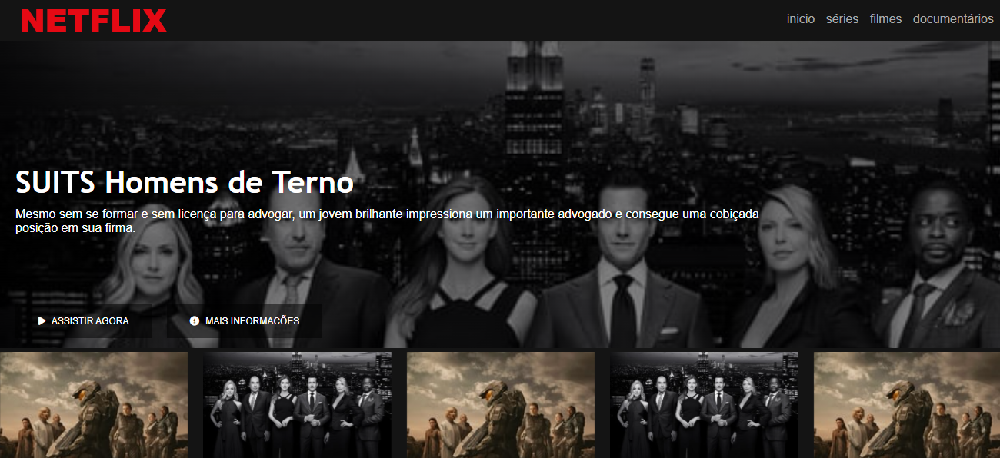

Meu trabalho:
Aqui está uma lista de projetos que construí no decorrer de minha formação como desenvolvedor.

Clone netflix
clone desenvolvido pela plataforma da dio com intuito de estudar HTML e CSS

Farmadev
Projeto de um site para farmacia feito durante o curso do Startlatam
+40
Plataforma de estudo para pessoas com mais de 40 anos aprenderem a programa hackathon 2022 saberes livre

casa menina mulher
casa menina mulher ONG site feito para o projeto integrador do ete porto digital para cadastrar pessoas da ONG
GoodFood
programa desktop para pedidos de uma pizzaria novos talentos
 LinkedIn
LinkedIn
 GitHub
GitHub